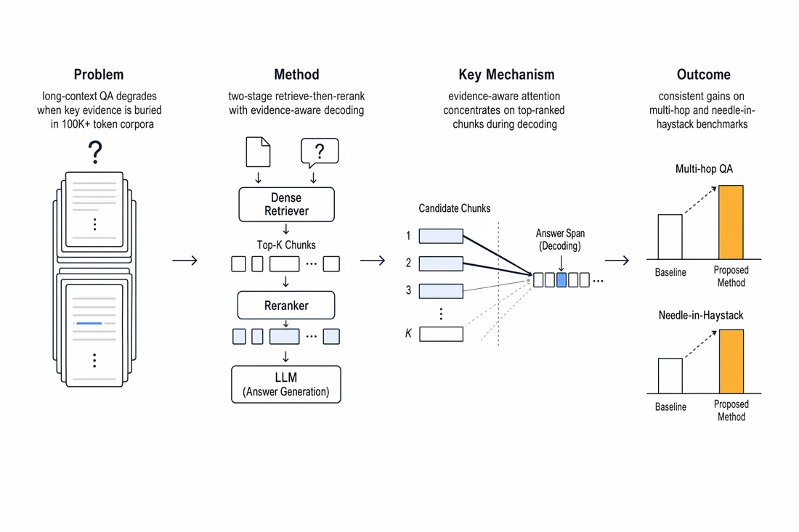
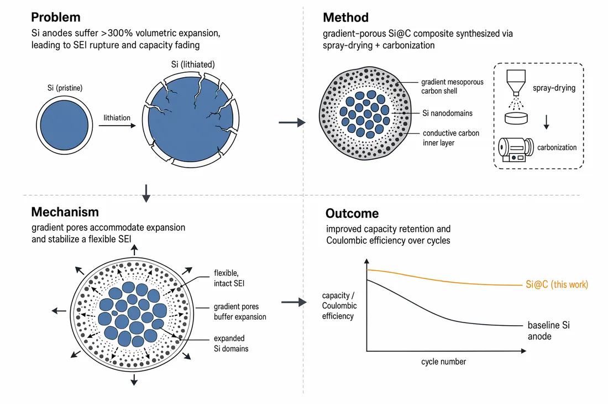
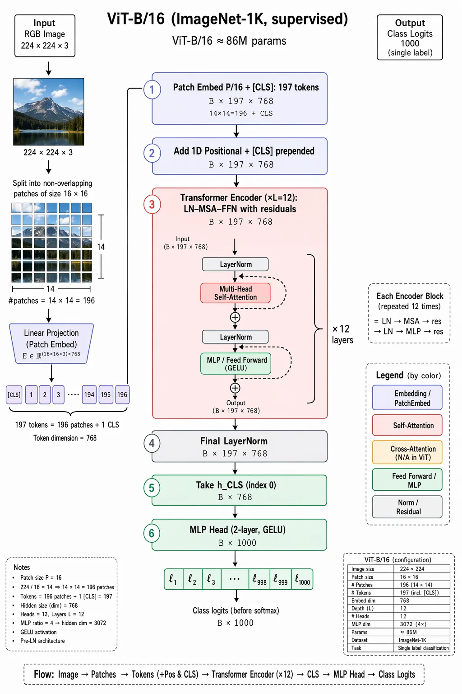
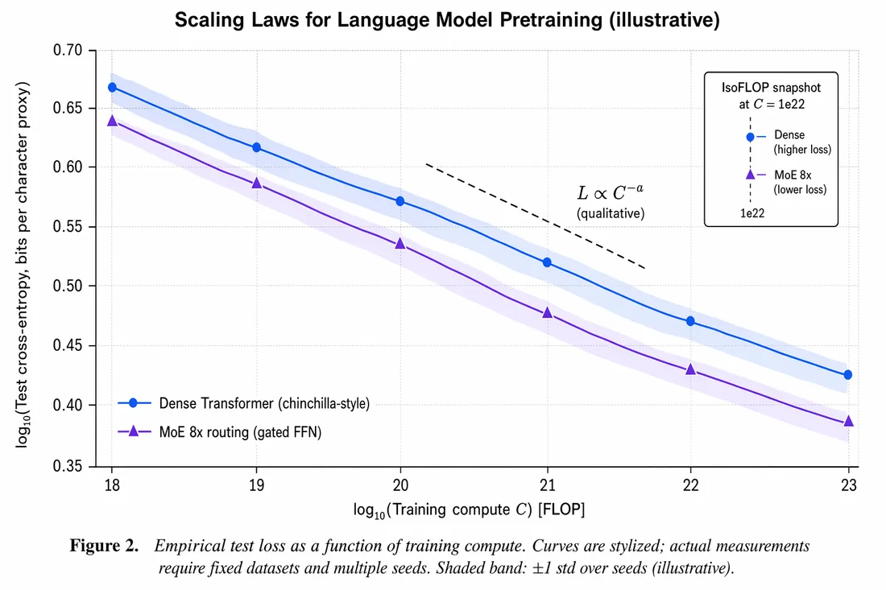
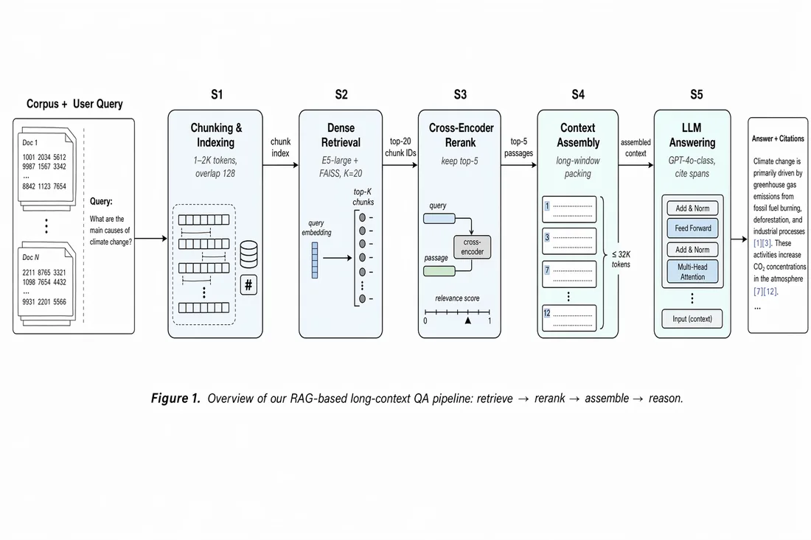
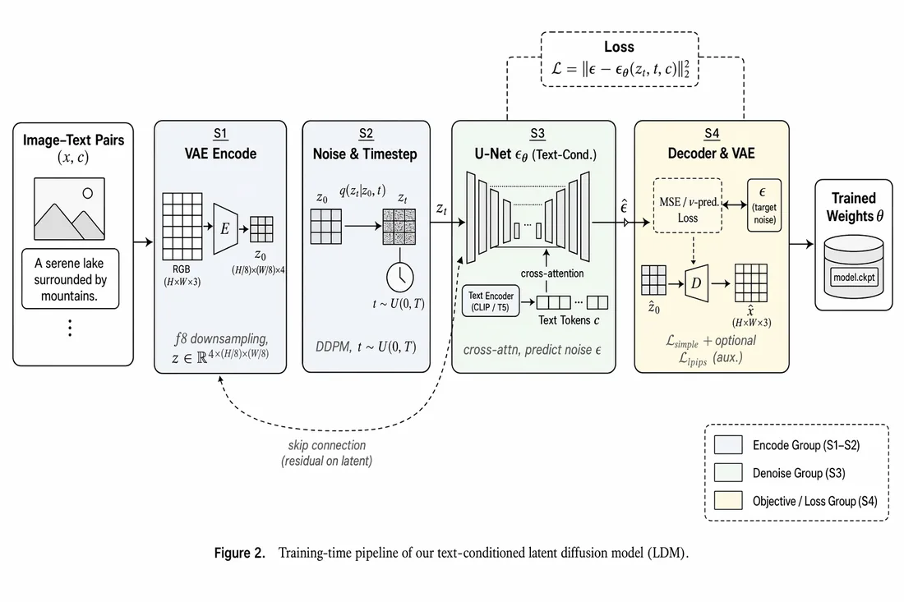

先把问题画出来
从长上下文问答、视觉 Transformer 到扩散模型，先用流程图拆开复杂系统，再决定哪些证据需要被保留。
研究从一个不够完整的问题开始：如何让复杂的信息被更可靠地检索、组织与解释？我把材料科学的结构意识带入 AI 系统，也把 AI 的方法带回真实实验。
从长上下文问答、视觉 Transformer 到扩散模型，先用流程图拆开复杂系统，再决定哪些证据需要被保留。
图像不是结论，而是可复查的中间层：它连接假设、方法、关键机制与最后的表现。
以下图示来自近期的研究阅读与方法整理。我保留原图中的英文术语，同时用中文说明它们在研究叙事中的位置，方便之后替换成真实项目数据。






这一版先把你提供的研究图整理成可浏览的档案。后续补入论文题目、数据来源、实验设置、代码仓库和结果表格后，它就可以从“阅读笔记”继续长成真正的项目页面。